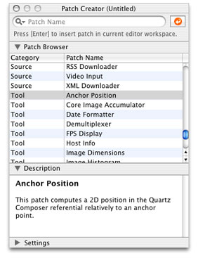
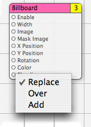

QCPlugIn Class Reference
| Inherits from | |
| Conforms to | |
| Framework | /System/Library/Frameworks/Quartz.framework/Frameworks/QuartzComposer.framework |
| Availability | Available in Mac OS X v10.5 and later. |
| Declared in | QCPlugIn.h QCPlugInViewController.h |
| Companion guides |
Overview
The QCPlugIn class provides the base class to subclass for writing custom Quartz Composer patches. You implement a custom patch by subclassing QCPlugIn, overriding the appropriate methods, packaging the code as an NSBundle object, and installing the bundle in the appropriate location. A bundle can contain more than one subclass of QCPlugIn, allowing you to provide a suite of custom patches in one bundle. Quartz Composer Custom Patch Programming Guide provides detailed instructions on how to create and package a custom patch. QCPlugIn Class Reference supplements the information in the programming guide.
The methods related to the executing the custom patch (called when the Quartz Composer engine is rendering) are passed an opaque object that conforms to the QCPlugInContext Protocol protocol. This object represents the execution context of the QCPlugIn object. You should not retain the execution context or use it outside of the scope of the execution method that it is passed to.
Tasks
Defining the Characteristics of a Custom Patch
Executing a Custom Patch
Performing Custom Tasks During Execution
Defining Patch and Property Port Attributes
Defining Internal Settings
Supporting Saving and Retrieving Internal Settings
Adding Ports Dynamically
-
– addInputPortWithType:forKey:withAttributes:
-
– removeInputPortForKey:
-
– addOutputPortWithType:forKey:withAttributes:
-
– removeOutputPortForKey:
Getting and Setting Port Values
Loading Bundle and Custom Patches Manually
Ordering Property Ports
Class Methods
attributes
Returns a dictionary that contains strings for the user interface that describe the custom patch.
+ (NSDictionary*) attributes
Return Value
The dictionary can contain one or more of these keys along with the appropriate string: QCPlugInAttributeNameKey, QCPlugInAttributeDescriptionKey, and QQCPlugInAttributeCopyrightKey.
Discussion
It’s recommended that you implement this method to enhance the experience of those who use your custom patch. The attribute name string that you provide is displayed in the Quartz Composer editor window when the custom patch name is selected in the Patch Creator (see figure). The attribute description key is displayed in the Information pane of the inspector for the custom patch.
Availability
- Available in Mac OS X v10.5 and later.
See Also
Declared In
QCPlugIn.hattributesForPropertyPortWithKey:
Returns a dictionary that contains strings for the user interface that describe the optional attributes for ports created from properties.
+ (NSDictionary*) attributesForPropertyPortWithKey:(NSString*)key
Parameters
- key
The name of the property.
Return Value
A dictionary that contains key-value pairs for the port’s attributes. The keys must be one or more of the constants defined in “Input and Output Port Attributes.”
Discussion
It’s recommended that you implement this method to enhance the experience of those who use your custom patch. The attributes appear in a help tag when the user hovers a pointer over the property port on your custom patch. At a minimum, you should provide a user-readable name for the port. It might also be helpful to provide default, minimum, and maximum values for the port.
Availability
- Available in Mac OS X v10.5 and later.
See Also
Declared In
QCPlugIn.hexecutionMode
Returns the execution mode of the custom patch.
+ (QCPlugInExecutionMode) executionMode
Return Value
The execution mode of the custom patch. See “Execution Modes” for the constants you can return.
Discussion
You must implement this method to define whether your custom patch is a provider, a processor, or a consumer.
Availability
- Available in Mac OS X v10.5 and later.
Declared In
QCPlugIn.hloadPlugInAtPath:
Loads a Quartz Composer plug-in bundle from the specified path.
+ (BOOL) loadPlugInAtPath:(NSString*)path
Parameters
- path
The location of the bundle.
Return Value
YES if successful.
Discussion
Call this method only if you need to load a plug-in bundle from a nonstandard location. Typically you don’t need to call this method because Quartz Composer automatically loads bundles that you install in one of the following locations:
/Library/Graphics/Quartz Composer Plug-Ins~/Library/Graphics/Quartz Composer Plug-Ins
This method does nothing if the bundle is already loaded. (This method does not load in all environments. Web Kit, for example, cannot load custom patches.)
The bundle can contain more than one QCPlugIn subclass. After the bundle is loaded, each QCPlugIn subclass appears as a patch in the Quartz Composer patch library.
Availability
- Available in Mac OS X v10.5 and later.
Declared In
QCPlugIn.hplugInKeys
Returns the keys for the internal settings of a custom patch.
+ (NSArray*) plugInKeys
Return Value
An array of keys used for key-value coding (KVC) of the internal settings.
Discussion
You must override this method if your patch provides a Settings pane. This keys are used for automatic serialization of the internal settings and are also used by the QCPlugInViewController instance for the Settings pane. The implementation is straightforward; the keys are strings that represent the instance variables used for the Settings pane. For example, the plugInKeys method for these instance variables:
@property(ivar, byref) NSColor * systemColor; |
@property(ivar, byref) NSConfiguration * systemConfiguration; |
are:
+ (NSArray*) plugInKeys |
{ |
return [NSArray arrayWithObjects: @"systemColor", |
@"systemConfiguration", |
nil]; |
} |
Availability
- Available in Mac OS X v10.5 and later.
See Also
Declared In
QCPlugIn.hregisterPlugInClass:
Registers a QCPlugIn subclass.
+ (void) registerPlugInClass:(Class)aClass
Parameters
- aClass
The
QCPlugInsubclass.
Discussion
You call this method only if the code for your custom patch is mixed with your application code, and you plan only to use the custom patch from within your application.
Availability
- Available in Mac OS X v10.5 and later.
Declared In
QCPlugIn.hsortedPropertyPortKeys
Returns and array of property port keys in the order you want them to appear in the user interface.
+ (NSArray*) sortedPropertyPortKeys;
Return Value
The property port keys in the order you want them to appear in the user interface.
Discussion
Override this method to specify an optional ordering for property based ports in the user interface.
Availability
- Available in Mac OS X v10.5 and later.
Declared In
QCPlugIn.htimeMode
Returns the time mode for the custom patch.
+ (QCPlugInTimeMode) timeMode
Return Value
The time mode of the custom patch. See “Time Modes” for the constants you can return.
Discussion
You must implement this method to define whether you custom patch depends on time, doesn’t depend on time, or needs time to idle.
Availability
- Available in Mac OS X v10.5 and later.
Declared In
QCPlugIn.hInstance Methods
addInputPortWithType:forKey:withAttributes:
Adds an input port of the specified type and associates a key and attributes with the port.
- (void) addInputPortWithType:(NSString*)type forKey:(NSString*)key withAttributes:(NSDictionary*)attributes
Parameters
- type
The port type. See
“Port Input and Output Types”.- key
The key to associate with the port.
- attributes
A dictionary of attributes for the port. See
“Input and Output Port Attributes”. Although the dictionary is optional, it’s recommended that provide attributes to enhance the experience of those who use your custom patch. The attributes appear in a help tag when the user hovers a pointer over the property port on your custom patch. (SeeattributesForPropertyPortWithKey:.) Passnilif you do not want to provide attributes.
Discussion
This method throws an exception if called from within the execute:atTime:withArguments: method or if there's already an input or output port with that key.
Availability
- Available in Mac OS X v10.5 and later.
See Also
Declared In
QCPlugIn.haddOutputPortWithType:forKey:withAttributes:
Adds an output port of the specified type and associates a key and attributes with the port.
- (void) addOutputPortWithType:(NSString*)type forKey:(NSString*)key withAttributes:(NSDictionary*)attributes
Parameters
- type
The port type. See
“Port Input and Output Types”.- key
The key to associate with the port.
- attributes
A dictionary of attributes for the port. See
“Input and Output Port Attributes”. Although the dictionary is optional, it’s recommended that provide attributes to enhance the experience of those who use your custom patch. The attributes appear in a help tag when the user hovers a pointer over the property port on your custom patch. (SeeattributesForPropertyPortWithKey:.) Passnilif you do not want to provide attributes.
Discussion
This method throws an exception if called from within the execute:atTime:withArguments: method or if there is already an output port with that key.
Availability
- Available in Mac OS X v10.5 and later.
See Also
Declared In
QCPlugIn.hcreateViewController
Creates and returns a view controller for the Settings pane of a custom patch.
- (QCPlugInViewController*) createViewController
Return Value
A view controller for the custom patch. Quartz Composer releases the controller when it is no longer needed. If necessary, you can return a subclass of QCPlugInViewController, but this it not typically done.
Discussion
This extension to the QCPlugInViewController class provides user-interface support for the Settings pane of the inspector for a custom patch. You must override this method if your custom patch provides a Settings pane. The QCPlugInViewController object acts as a controller for Cocoa bindings between the custom patch instance (the model) and the NSView that contains the controls. It loads the nib file from the bundle.
The implementation is straightforward. You allocate a QCPlugInViewController object, initialize it, and provide the name of the nib file that contains the user interface for the Settings pane.
Note that this method follows the Core Foundation “create” rule. See the ownership policy in Memory Management Programming Guide for Core Foundation.
For example, if the nib file name that contains the settings pane is MySettingsPane.nib, the implementation is:
- (QCPlugInViewController *) createViewController |
{ |
return [[QCPlugInViewController alloc] initWithPlugIn:self |
viewNibName:@"MySettingsPane"]; |
} |
Availability
- Available in Mac OS X v10.5 and later.
See Also
Declared In
QCPlugInViewController.hdidValueForInputKeyChange:
Returns whether the input port value changed since the last execution of the custom patch.
- (BOOL) didValueForInputKeyChange:(NSString*)key
Parameters
- key
The key for the input port whose value you want to check.
Return Value
YES if the value on the input port changed since the last time the execute:atTime:withArguments: method was called; always returns NO if called outside of the execute:atTime:withArguments: method.
Availability
- Available in Mac OS X v10.5 and later.
See Also
Declared In
QCPlugIn.hdisableExecution:
Allows you to perform custom tasks when the execution of the QCPlugIn object is paused.
- (void) disableExecution:(id<QCPlugInContext>)context
Parameters
- context
An opaque object , conforming to the
QCPlugInContext Protocolprotocol, that represents the execution context of theQCPlugInobject. Do not retain this object or use it outside of the scope of this method.
Discussion
The Quartz Composer engine calls this method when results are no longer being pulled from the custom patch. You can optionally override this execution method to perform custom tasks at that time.
Availability
- Available in Mac OS X v10.5 and later.
See Also
Declared In
QCPlugIn.henableExecution:
Allows you to perform custom tasks when the execution of the QCPlugIn object is resumed.
- (void) enableExecution:(id<QCPlugInContext>)context
Parameters
- context
An opaque object , conforming to the
QCPlugInContext Protocolprotocol, that represents the execution context of theQCPlugInobject. Do not retain this object or use it outside of the scope of this method.
Discussion
The Quartz Composer engine calls this method when results start to be pulled from the custom patch. You can optionally override this execution method to perform custom tasks at that time.
Availability
- Available in Mac OS X v10.5 and later.
See Also
Declared In
QCPlugIn.hexecute:atTime:withArguments:
Performs the processing or rendering tasks appropriate for the custom patch.
- (BOOL) execute:(id<QCPlugInContext>)context atTime:(NSTimeInterval)time withArguments:(NSDictionary*)arguments
Parameters
- context
An opaque object , conforming to the
QCPlugInContext Protocolprotocol, that represents the execution context of theQCPlugInobject. Do not retain this object or use it outside of the scope of this method.- time
The execution interval.
- arguments
A dictionary of arguments that can be used during execution. See
“Execution Arguments”.
Return Value
NO indicates the custom patch was not able to execute successfully. In this case, the Quartz Composer engine stops rendering the current frame.
Discussion
The Quartz Composer engine calls this method each time your custom patch needs to execute. You must implement this method. The method should perform whatever tasks are appropriate for the custom patch, such as:
reading values from the input ports
computing output values
updating the values on the output ports
rendering to the execution context
For example implementations of this method, see Quartz Composer Custom Patch Programming Guide.
Availability
- Available in Mac OS X v10.5 and later.
Declared In
QCPlugIn.hremoveInputPortForKey:
Removes the input port for a given key.
- (void) removeInputPortForKey:(NSString*)key
Parameters
- key
The key associated with the port that you want to remove.
Discussion
This method throws an exception if from within the execute:atTime:withArguments: method, if there is not an input port with that key, or if the port is created from a property.
Availability
- Available in Mac OS X v10.5 and later.
See Also
Declared In
QCPlugIn.hremoveOutputPortForKey:
Removes the output port for a given key.
- (void) removeOutputPortForKey:(NSString*)key
Parameters
- key
The key associated with the port that you want to remove.
Discussion
This method throws an exception if called from within the execute:atTime:withArguments: method, if there is not an output port with that key, or if the port is created from a property.
Availability
- Available in Mac OS X v10.5 and later.
See Also
Declared In
QCPlugIn.hserializedValueForKey:
Provides custom serialization for patch internal settings that do not comply to the NSCoding protocol.
- (id) serializedValueForKey:(NSString*)key
Parameters
- key
The key for the value to retrieve.
Return Value
Either nil or a value that’s compliant with property lists: NSString, NSNumber, NSDate, NSData, NSArray, or NSDictionary.
Discussion
If your patch has internal settings that do not conform to the NSCoding protocol, you must implement this method.
Availability
- Available in Mac OS X v10.5 and later.
See Also
Declared In
QCPlugIn.hsetSerializedValue:forKey:
Provides custom deserialization for patch internal settings that were previously serialized using the method serializedValueForKey:.
- (void) setSerializedValue:(id)serializedValue forKey:(NSString*)key
Parameters
- serializedValue
The value to deserialize.
- key
The key for the value to deserialize.
Discussion
If your patch has internal settings that do not conform to the NSCoding protocol, you must implement this method. After you deserialize the value, you need to call [self set:value forKey:key] to set the corresponding internal setting of the custom patch instance to the deserialized value.
Availability
- Available in Mac OS X v10.5 and later.
Declared In
QCPlugIn.hsetValue:forOutputKey:
Sets the value of an output port.
- (BOOL) setValue:(id)value forOutputKey:(NSString*)key
Parameters
- key
The key associated with the output port whose value you want to set.
Return Value
YES if successful; NO if called outside of the execute:atTime:withArguments: method.
Discussion
You call this method from within your execute:atTime:withArguments: method to set the output values of your custom patch.
Availability
- Available in Mac OS X v10.5 and later.
See Also
Declared In
QCPlugIn.hstartExecution:
Allows you to perform custom setup tasks before the Quartz Composer engine starts rendering.
- (BOOL) startExecution:(id<QCPlugInContext>)context
Parameters
- context
An opaque object , conforming to the
QCPlugInContext Protocolprotocol, that represents the execution context of theQCPlugInobject. Do not retain this object or use it outside of the scope of this method.
Return Value
NO indicates a fatal error occurred and prevents the Quartz Composer engine from starting.
Discussion
The Quartz Composer engine calls this method when your custom patch starts to render. You can optionally override this execution method to perform setup tasks.
Availability
- Available in Mac OS X v10.5 and later.
See Also
Declared In
QCPlugIn.hstopExecution:
Allows you to perform custom tasks when the QCPlugIn object stops executing.
- (void) stopExecution:(id<QCPlugInContext>)context
Parameters
- context
An opaque object , conforming to the
QCPlugInContext Protocolprotocol, that represents the execution context of theQCPlugInobject. Do not retain this object or use it outside of the scope of this method.
Discussion
The Quartz Composer engine calls this method when it stops executing. You can optionally override this execution method to perform cleanup tasks.
Availability
- Available in Mac OS X v10.5 and later.
See Also
Declared In
QCPlugIn.hvalueForInputKey:
Returns the current value for an input port.
- (id) valueForInputKey:(NSString*)key
Parameters
- key
The key for the input port you want to check.
Return Value
The value associated with the key or nil if called outside of the execute:atTime:withArguments: method.
Discussion
You call this method from within your execute:atTime:withArguments: method to retrieve the input values of your custom patch.
Availability
- Available in Mac OS X v10.5 and later.
See Also
Declared In
QCPlugIn.hConstants
Patch Attributes
Attributes for custom patches.
extern NSString* const QCPlugInAttributeNameKey; extern NSString* const QCPlugInAttributeDescriptionKey; extern NSString* const QCPlugInAttributeCopyrightKey;
Constants
QCPlugInAttributeNameKeyThe key for the custom patch name. The associated value is an
NSStringobject.Available in Mac OS X v10.5 and later.
Declared in
QCPlugIn.h.QCPlugInAttributeDescriptionKeyThe key for the custom patch description. The associated value is an
NSStringobject.Available in Mac OS X v10.5 and later.
Declared in
QCPlugIn.h.QQCPlugInAttributeCopyrightKeyThe key for the custom patch copyright information. The associated value is an
NSStringobject.
Declared In
QCPlugIn.hInput and Output Port Attributes
Attributes for input and output ports.
extern NSString* const QCPortAttributeTypeKey; extern NSString* const QCPortAttributeNameKey; extern NSString* const QCPortAttributeDefaultValueKey; extern NSString* const QCPortAttributeMinimumValueKey; extern NSString* const QCPortAttributeMaximumValueKey; extern NSString* const QCPortAttributeDefaultValueKey; extern NSString* const QCPortAttributeMenuItemsKey;
Constants
QCPortAttributeTypeKeyThe key for the port type. The associated value can be of any of the following constants:
QCPortTypeBoolean,QCPortTypeIndex,QCPortTypeNumber,QCPortTypeString,QCPortTypeColor,QCPortTypeImage, orQCPortTypeStructure.Available in Mac OS X v10.4 and later.
Declared in
QCPlugIn.h.QCPortAttributeNameKeyThe key for the port name. The associated value is an
NSStringobject.Available in Mac OS X v10.4 and later.
Declared in
QCPlugIn.h.QCPortAttributeMinimumValueKeyThe key for the port minimum value. The associated value is an
NSNumberobject that specifies the minimum numerical value accepted by the port.Available in Mac OS X v10.4 and later.
Declared in
QCPlugIn.h.QCPortAttributeMaximumValueKeyThe key for the port maximum value. The associated value is an
NSNumberobject that specifies the maximum numerical value accepted by the port.Available in Mac OS X v10.4 and later.
Declared in
QCPlugIn.h.QCPortAttributeDefaultValueKeyThe key for the port default value. You can use this key only for value ports (Boolean, Index, Number, Color and String).
Available in Mac OS X v10.5 and later.
Declared in
QCPlugIn.h.QCPortAttributeMenuItemsKeyThe key for the menu items. The associated value is an array of strings that are displayed in the user interface as a pop-up menu when the user double-clicks a port, as shown for the Blending input port of the Billboard patch. You can use this key only for an index port.
Available in Mac OS X v10.5 and later.
Declared in
QCPlugIn.h.
Declared In
QCPlugIn.hPort Input and Output Types
Data types for input and output ports.
extern NSString* const QCPortTypeBoolean; extern NSString* const QCPortTypeIndex; extern NSString* const QCPortTypeNumber; extern NSString* const QCPortTypeString; extern NSString* const QCPortTypeColor; extern NSString* const QCPortTypeImage; extern NSString* const QCPortTypeStructure;
Constants
QCPortTypeBooleanThe port type for a Boolean value. The associated value can be an
NSNumberobject or any object that responds to the-intValue,-floatValue, or-doubleValuemethods.Available in Mac OS X v10.4 and later.
Declared in
QCPlugIn.h.QCPortTypeIndexThe port type for an index value. The associated value can be an
NSNumberobject or any object that responds to the-intValue,-floatValue, or-doubleValuemethods.Available in Mac OS X v10.4 and later.
Declared in
QCPlugIn.h.QCPortTypeNumberThe port type for a number value. The associated value can be an
NSNumberobject or any object that responds to the-intValue,-floatValue, or-doubleValuemethods.Available in Mac OS X v10.4 and later.
Declared in
QCPlugIn.h.QCPortTypeStringThe port type for a string. The associated value can be an
NSStringobject or any object that responds to the-stringValueor-descriptionmethods.Available in Mac OS X v10.4 and later.
Declared in
QCPlugIn.h.QCPortTypeColorThe port type for a color value. The associated value must be an
NSColorobject.Available in Mac OS X v10.4 and later.
Declared in
QCPlugIn.h.QCPortTypeImageThe port type for an image. The associated value can be an
NSImageobject or aCIImageobject.Available in Mac OS X v10.4 and later.
Declared in
QCPlugIn.h.QCPortTypeStructureThe port type for an array, dictionary, or other structure, such as an
NSArrayorNSDictionaryobject.Available in Mac OS X v10.4 and later.
Declared in
QCPlugIn.h.
Declared In
QCPlugIn.hPixel Formats
Supported image pixel formats.
extern NSString* const QCPlugInPixelFormatARGB8; extern NSString* const QCPlugInPixelFormatBGRA8; extern NSString* const QCPlugInPixelFormatRGBAf; extern NSString* const QCPlugInPixelFormatI8; extern NSString* const QCPlugInPixelFormatIf;
Constants
QCPlugInPixelFormatARGB8An ARGB8 format. The alpha component is stored in the most significant bits of each pixel. Each pixel component is 8 bits. For best performance, use this format on PowerPC-based Macintosh computers, as it represents of the order of the data in memory.
Available in Mac OS X v10.5 and later.
Declared in
QCPlugIn.h.QCPlugInPixelFormatBGRA8A BGRA8 format. The alpha component is stored in the least significant bits of each pixel. Each pixel component is 8 bits. For best performance, use this format on Intel-PC-based Macintosh computers, as it represents of the order of the data in memory.
Available in Mac OS X v10.5 and later.
Declared in
QCPlugIn.h.QCPlugInPixelFormatRGBAfAn RGBAf format. Pixel components are represented as floating-point values.
Available in Mac OS X v10.5 and later.
Declared in
QCPlugIn.h.QCPlugInPixelFormatI8An I8 format. Intensity information is represented as an 8-bit value.
Available in Mac OS X v10.5 and later.
Declared in
QCPlugIn.h.QCPlugInPixelFormatIfAn If format. Intensity information is represented as a floating-point value.
Available in Mac OS X v10.5 and later.
Declared in
QCPlugIn.h.
Declared In
QCPlugIn.hExecution Arguments
Arguments to the method execute:atTime:withArguments:.
extern NSString* const QCPlugInExecutionArgumentEventKey; extern NSString* const QCPlugInExecutionArgumentMouseLocationKey;
Constants
QCPlugInExecutionArgumentEventKeyThe current
NSEventif available.Available in Mac OS X v10.5 and later.
Declared in
QCPlugIn.h.QCPlugInExecutionArgumentMouseLocationKeyThe current location of the mouse (as an
NSPointobject stored in anNSValueobject) in normalized coordinates relative to the OpenGL context viewport ([0,1]x[0,1] with the origin (0,0) at the lower-left corner).Available in Mac OS X v10.5 and later.
Declared in
QCPlugIn.h.
Declared In
QCPlugIn.hExecution Modes
Execution modes for custom patches.
typedef enum {
kQCPlugInExecutionModeProvider = 1,
kQCPlugInExecutionModeProcessor,
kQCPlugInExecutionModeConsumer
} QCPlugInExecutionMode;
Constants
kQCPlugInExecutionModeProviderA provider execution mode. The custom patch executes on demand—that is, whenever data is requested of it, but at most once per frame.
Available in Mac OS X v10.5 and later.
Declared in
QCPlugIn.h.kQCPlugInExecutionModeProcessorA processor execution mode. The custom patch executes whenever its inputs change or if the time change (assuming it's time-dependent).
Available in Mac OS X v10.5 and later.
Declared in
QCPlugIn.h.kQCPlugInExecutionModeConsumerA consumer execution mode. The custom patch always executes assuming the value of its Enable input port is
true. (The Enable port is automatically added by the system.)Available in Mac OS X v10.5 and later.
Declared in
QCPlugIn.h.
Declared In
QCPlugIn.hTime Modes
Time modes for custom patches.
typedef enum {
kQCPlugInTimeModeNone = 0,
kQCPlugInTimeModeIdle,
kQCPlugInTimeModeTimeBase
} QCPlugInTimeMode;
Constants
kQCPlugInTimeModeNoneNo time dependency. The custom patch does not depend on time at all. (It does not use the
timeparameter of theexecute:atTime:withArguments:method.)Available in Mac OS X v10.5 and later.
Declared in
QCPlugIn.h.kQCPlugInTimeModeIdleAn idle time dependency. The custom patch does not depend on time but needs the system to execute it periodically. For example if the custom patch connects to a piece of hardware, to ensure that it pulls data from the hardware, you would set the custom patch time dependency to idle time mode. This time mode is typically used with providers.]]
Available in Mac OS X v10.5 and later.
Declared in
QCPlugIn.h.kQCPlugInTimeModeTimeBaseA time base dependency. The custom patch does depend on time explicitly and has a time base defined by the system. (It uses the
timeparameter of theexecute:atTime:withArguments:method.)Available in Mac OS X v10.5 and later.
Declared in
QCPlugIn.h.
Declared In
QCPlugIn.h
© 2008 Apple Inc. All Rights Reserved. (Last updated: 2008-04-08)